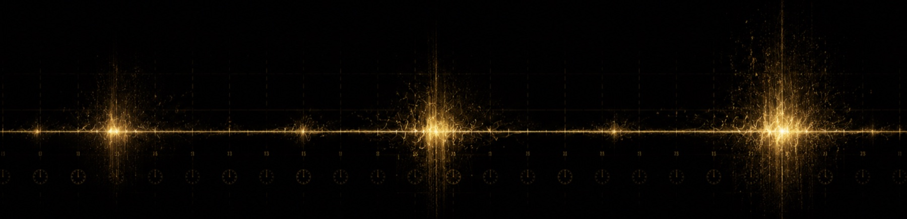
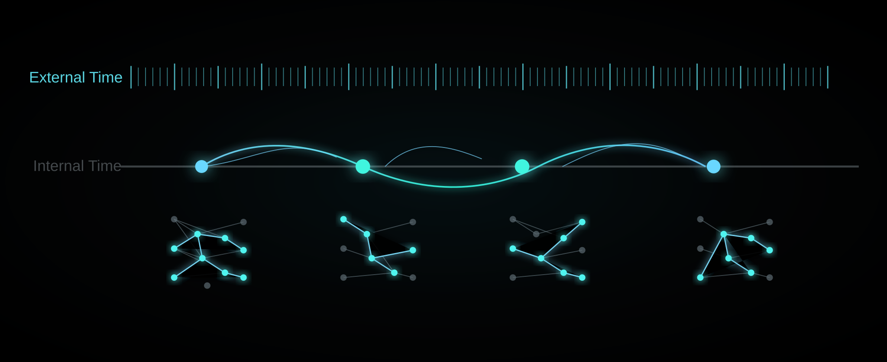

Two Kinds of Time in Neural Networks

What is time? The question becomes strangely disorienting once you take it seriously. We live inside time, yet we cannot hold it. Many people also share the same illusion after growing up: every year seems to pass faster than the last; the long summers of childhood disappear; calendars turn with less weight. It is tempting to wonder whether time is not a uniform straight line after all. Perhaps it has structure. Some moments truly "happen", while others merely pass. Society turns time into order: clocks, schedules, calendars, semesters, evaluations, grids. Every minute is made to look equally qualified. But memory does not operate on that grid. It waits for events. In this sense, "time is going faster" often does not mean that clocks are moving faster. It means that events worth writing into memory have become sparse, and the blank spaces between them have quietly stretched. Time reveals a harsh fact here: it is not only the length of passing, but also a filtered structure.
Neural networks are useful microscopes for this question, because they turn the abstraction of time into equations. An RNN is like someone writing a diary every day: at each step it reads a new input and rewrites its state. But even feedforward networks, which seem to have "no time", contain time in disguise. A feedforward network computes layer by layer; the previous layer is always the past of the next layer. Backpropagation simply unfolds this "space-time" for us: each layer is a moment, and each mapping is an event. In this sense, a feedforward network is an RNN whose parameters are not shared across time, while an RNN is a feedforward network whose parameters are shared while new inputs keep arriving. This gives us two kinds of time: external time, meaning how many steps the sequence has advanced, and internal time, meaning how many times the state has actually changed. In many traditional architectures, these two are tied together by default. External time advances by one step; internal time updates by one step. "How long it has lived" is forced to equal "how many times it has changed."
Once the time axis becomes too long, trouble appears. Very deep networks are hard to train, and very long RNNs are hard to train, for essentially the same reason: gradients must pass through too many nonlinear transformations, and repeated multiplication makes them vanish or explode. ResNet opens a residual shortcut along depth; Transformer builds bridges between tokens through attention. Both, in different ways, make information rewrite itself fewer times and make the time axis easier to traverse. But they often still assume that whenever external time takes a step, the system must do something. The real world is not like that. Important moments are rare; many days are repetition. Language, music, financial data, and sensor streams are similar: some segments are dense with information, while others are almost background noise. Yet many neural networks keep a uniform rhythm. An RNN applies the same transformation at every step, no matter whether something important happened or the day was just brushing teeth. Information is uneven, but computation is regular. This mismatch wastes computation in long sequences and lets memory get diluted by repeated rewriting. The issue is not only whether the model is large enough, or whether the operator is strong enough. It is also whether the temporal structure allows "remaining unchanged" to be a legitimate computation.
If we treat a neural network as a system living in time, a natural idea appears: stay unchanged most of the time, and update only when something truly needs to change. This is Selective Update. The key point is not which module opens the gate, whether rhythm, content, or something else. The key point is that once "not opening the gate" is allowed, the system's notion of time changes. Some parts of the state can follow an almost identity-like carry path and remain stable, while local rewriting happens only when needed. Physical time steps still move forward, but internal effective time becomes decoupled from them. Over ten thousand external steps, some neurons may truly update only a few hundred times. The difficulty of gradients and memory is no longer governed only by external span, but by internal update density. This is the force of "subnetwork for subsequence": once the network updates only at selected moments, the computation graph selects a sparse path, equivalent to extracting a subnetwork that runs on a particular update subsequence. Different inputs illuminate different paths, while sharing the same parameters and representation space. Put simply, this is not just about making the network faster. It teaches the network when it does not need to move. Staying unchanged becomes the default; real computation happens only at moments that deserve it.
This is more than a metaphor. In long-range tasks such as Copying-Memory, when delays stretch to thousands of steps, ordinary recurrent structures often fail to learn or learn very slowly. With selective updates, the model can form a stable "hold-and-read" rhythm: most internal states barely move for long stretches, and key positions trigger updates. In selective copy tasks designed around sparse writing and long-term storage, the match is almost built into the task definition. If the task wants the state not to change most of the time, then allowing "not updating" as a valid structural operation is the right inductive bias. In these settings, ordinary GRUs can perform very poorly, while suGRU can approach perfect accuracy. That is not a small incremental gain; it is a shift from not being able to learn to being able to learn. On Long Range Arena, strictly streaming and unidirectional recurrent models with selective updates can also perform well on difficult tasks such as Pathfinder. Even in language modeling on WikiText-103, selective-update recurrent models can reach perplexities comparable to same-scale Transformers, and improve further when interleaved with attention. This suggests that Selective Update is closer to a temporal structural primitive than to a small trick inside one architecture.

Because it behaves like a primitive, temporal structure deserves more attention as a research direction. We usually think of architectural innovation on the spatial side: better convolutions, stronger attention, more depth, more width. Selective Update reminds us that the time side also has structure to invent. And invention does not always mean making every step more complex. Sometimes it means making most steps simpler. Along this line, several directions become natural: hybrid spatiotemporal operators, where recurrence provides a stable streaming memory backbone and attention is used only at selected events; event-driven computation aligned with hardware, where large portions of carry steps could be skipped; and a research view in which a network is not a single computation path, but a family of subnetworks running on input-dependent subsequences. That view opens new questions in continual learning, interference, and interpretability: not only what the model has learned, but which path it activated and which update points formed its internal time.
This returns us to the original question of time. Perhaps time feels faster not because time itself has accelerated, but because fewer update points leave marks in memory. Internal time becomes sparse, and life feels compressed. Selective Update makes this intuition explicit in engineering terms: what matters is not how many steps have passed, but how many real updates have occurred. When external time flows uniformly while internal time jumps sparsely according to events, a system can travel far without wearing itself down through meaningless rewriting at every step. The same may reflect something about human experience. Growth is not filling every second. It is being clearly rewritten at a few moments that make us who we are, and then carrying those changes quietly through the long blank spaces.
Note: The Selective Update mechanism, suGRU, and related benchmark results discussed here refer to Yin et al., "Efficient Sparse Selective-Update RNNs for Long-Range Sequence Modeling" (arXiv:2603.02226, 2026).